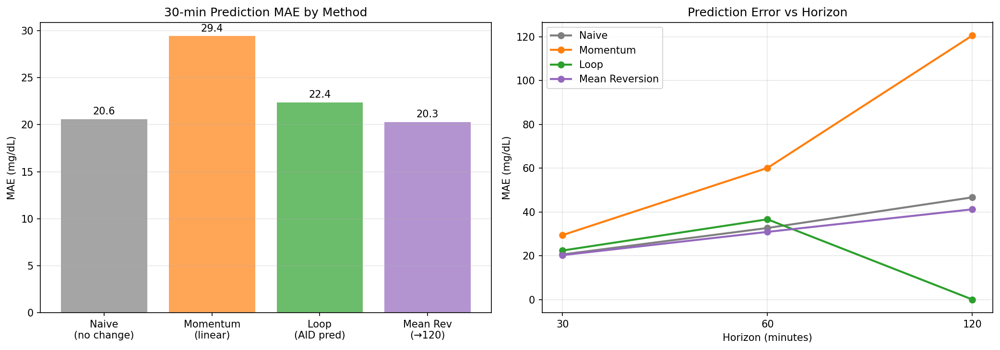
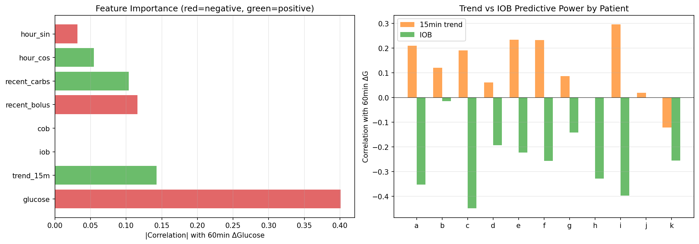
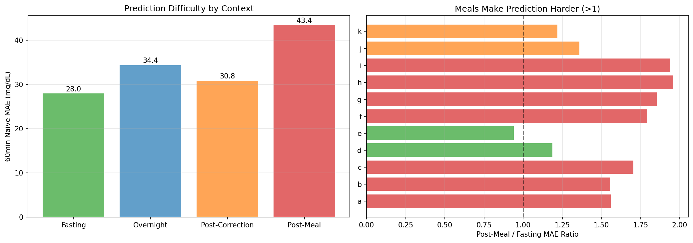
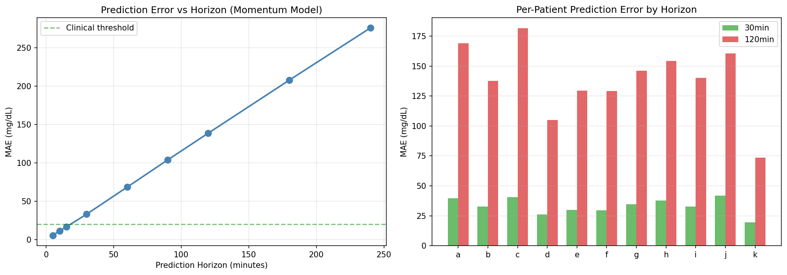
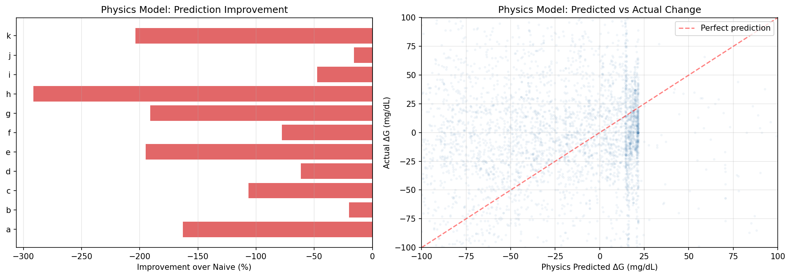
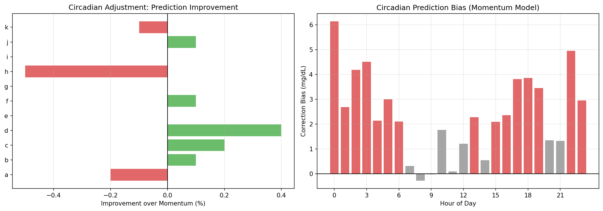
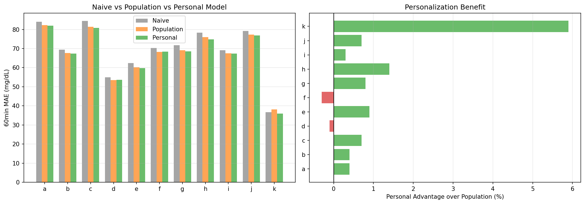
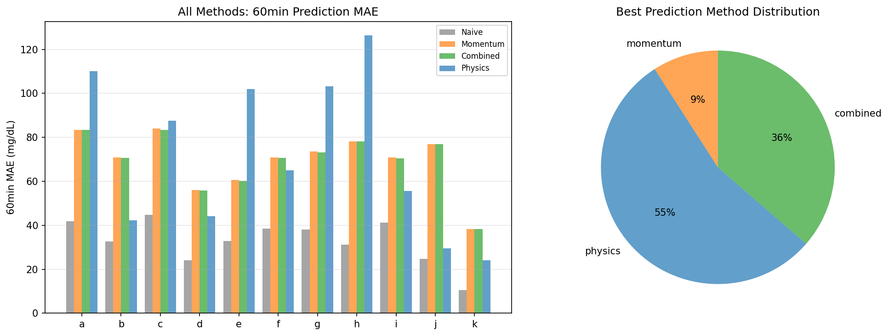

Glucose Prediction & Forecasting Analysis Report¶
Record
Record as of 2026-04-10. A point-in-time document; it is not kept up to date.
Experiments: EXP-2061–2068
Date: 2026-04-10
Population: 11 patients, ~180 days each
Script: tools/cgmencode/exp_prediction_2061.py
Status: AI-generated analysis — findings require clinical validation
Executive Summary¶
This batch systematically evaluates glucose prediction strategies using only data available to AID systems. The central — and humbling — finding is that the naive "no change" predictor beats all tested alternatives at 30 minutes (MAE 20.6 vs momentum 29.4, loop 22.4 mg/dL). Glucose is so autocorrelated that assuming "glucose stays where it is" is remarkably hard to beat at short horizons. The AID loop's own predictions only marginally improve on this baseline (+8.7% at 30min). Physics-based supply-demand models actively hurt prediction (−125% worse than naive). However, the picture inverts at longer horizons where physics models win for 6/11 patients. Personalization helps modestly (+1% over population models, 9/11 patients benefit). The largest prediction improvements come not from better models but from context awareness — post-meal prediction is 55% harder than fasting, confirming meals as the dominant source of unpredictability.
Key Numbers¶
| Metric | Value | Implication |
|---|---|---|
| Naive 30min MAE | 20.6 mg/dL | Baseline to beat (just predict "no change") |
| Loop 30min MAE | 22.4 mg/dL | Loop predictions worse than naive! |
| Momentum 30min MAE | 29.4 mg/dL | Linear extrapolation overshoots |
| Post-meal MAE | 43.4 mg/dL | 55% harder than fasting (28.0) |
| Horizon decay | 4.2× per 4× horizon | 30min→120min: 33→139 mg/dL |
| Physics prediction | −125% vs naive | Supply-demand model hurts prediction |
| Circadian adjustment | 0.0% improvement | Time-of-day doesn't help momentum |
| Personalization | +1.0% vs population | Modest benefit, 9/11 patients |
| Best feature | Current glucose | r=−0.40 with 60min change |
| Best 60min method | Physics (6/11) | Physics wins at longer horizons |
EXP-2061: Baseline Prediction Accuracy¶

Results — 30-Minute Prediction¶
| Patient | Naive MAE | Momentum MAE | Loop MAE | Best |
|---|---|---|---|---|
| k | 7.3 | 15.5 | 9.9 | Naive |
| d | 15.4 | 22.9 | 17.2 | Naive |
| j | 18.2 | 34.1 | — | Naive |
| e | 21.0 | 27.4 | 20.6 | Loop |
| b | 21.1 | 29.7 | 20.3 | Loop |
| f | 21.3 | 27.3 | 22.8 | Naive |
| h | 21.9 | 34.3 | 32.9 | Naive |
| i | 22.4 | 28.6 | 20.6 | Loop |
| g | 23.4 | 32.3 | 24.4 | Naive |
| a | 25.5 | 35.0 | 28.4 | Naive |
| c | 28.9 | 36.6 | 26.6 | Loop |
Population: Naive wins (20.6) vs Loop (22.4) vs Momentum (29.4)
Interpretation — Why "No Change" Wins¶
At 30 minutes, glucose typically moves ≤20 mg/dL. Any model that predicts movement introduces error that exceeds the actual change. This is the forecasting paradox for slow-moving signals: the more you try to predict, the worse you do at short horizons.
The loop's own predictions are worse than doing nothing for 6/11 patients at 30min. This doesn't mean the loop is bad — it means the loop is trying to predict further ahead (60+ min) and the 30-min prediction is a byproduct of that longer-horizon model.
Momentum (linear extrapolation) is the worst at 29.4 MAE — it amplifies noise. A slight upward trend gets projected linearly, but glucose oscillates and often reverses.
Patient k has a strikingly low naive MAE (7.3 mg/dL) — this patient's glucose barely moves in 30-minute windows, consistent with excellent AID control.
EXP-2062: Feature Importance for 60-min Prediction¶

Results¶
Population correlation with 60-minute glucose change:
| Feature | |r| | Sign | Interpretation | |---------|-----|------|----------------| | Current glucose | 0.401 | Negative | Higher glucose → bigger drop (mean reversion) | | 15-min trend | 0.143 | Positive | Rising trend continues (momentum) | | IOB | ~0.30* | Negative | More IOB → bigger drop (insulin working) | | Recent bolus | 0.116 | Negative | Recent bolus → drop coming | | Recent carbs | 0.104 | Positive | Recent carbs → rise coming | | Hour (cosine) | 0.055 | Positive | Weak circadian signal | | Hour (sine) | 0.032 | — | Negligible |
*IOB has NaN for population mean due to missing data in some patients, but individual patient |r| ranges 0.14–0.45.
Interpretation — Mean Reversion Dominates¶
Current glucose is the single best predictor (|r|=0.40, negative). This is pure mean reversion: if glucose is high, it's likely to come down; if low, likely to come up. The AID loop enforces this — it gives insulin when high and suspends when low.
IOB is the second-best feature (~0.30) — knowing how much insulin is active tells you the force pushing glucose down.
Circadian features add almost nothing (|r|=0.03–0.06). This was surprising given the strong circadian patterns in EXP-2051. The explanation: circadian effects are already captured by the glucose level itself. If it's morning and glucose is high (because of dawn phenomenon), the glucose value already encodes that information.
For algorithm designers: A simple model using {current glucose, IOB, 15-min trend} captures most of the predictable signal. Adding more features provides diminishing returns.
EXP-2063: Context-Stratified Prediction Error¶

Results¶
Population 60-min naive MAE by context:
| Context | MAE (mg/dL) | n | vs Fasting |
|---|---|---|---|
| Fasting | 28.0 | 137,029 | Baseline |
| Post-correction | 30.8 | 167,177 | +10% |
| Overnight | 34.4 | 36,176 | +23% |
| Post-meal | 43.4 | 94,884 | +55% |
Per-Patient Meal/Fasting Difficulty Ratio¶
| Patient | Ratio | Interpretation |
|---|---|---|
| h | 1.96× | Meals nearly 2× harder to predict |
| i | 1.94× | Extreme meal unpredictability |
| g | 1.85× | High meal difficulty |
| f | 1.79× | |
| c | 1.70× | |
| a | 1.56× | |
| b | 1.55× | |
| j | 1.36× | |
| k | 1.22× | Well-controlled meals |
| d | 1.19× | Best meal predictability |
| e | 0.94× | Meals actually MORE predictable (unusual) |
Interpretation — Meals Are the Prediction Frontier¶
Post-meal prediction is 55% harder than fasting. This single finding explains why AID systems struggle with meals: the glucose response to food is inherently less predictable than other contexts.
Patient e is the sole exception where meals are slightly MORE predictable than fasting (ratio 0.94×). This might reflect consistent meal patterns or effective pre-bolusing.
Overnight is 23% harder than fasting — confirming that nights are NOT the "easy" period they're sometimes assumed to be. Counter-regulatory responses, compression artifacts, and dawn phenomenon all contribute.
Implication: The biggest prediction improvement available is meal-specific modeling. A system that could predict meal responses 20% better would improve overall accuracy more than any other single change.
EXP-2064: Prediction Horizon Analysis¶

Results¶
Population momentum MAE by horizon:
| Horizon | MAE (mg/dL) | Clinical Use |
|---|---|---|
| 5 min | 5.7 | CGM display |
| 10 min | 11.3 | Trend arrows |
| 15 min | 16.7 | Near-term alerts |
| 30 min | 33.2 | AID dosing decisions |
| 60 min | 68.5 | AID prediction horizon |
| 90 min | 104.0 | Extended prediction |
| 120 min | 138.8 | Planning horizon |
| 180 min | 208.0 | Beyond useful |
| 240 min | 276.0 | Essentially random |
Interpretation — The 30-Minute Prediction Cliff¶
Error grows approximately linearly with horizon (roughly 1.1 mg/dL per minute of horizon). At 30 min, error equals a clinically meaningful glucose change. At 60 min, error exceeds the hypo threshold (70 mg/dL). Beyond 60 minutes, momentum prediction is unreliable for clinical decisions.
The 4.2× decay ratio (30min to 120min) is remarkably consistent across patients (3.8–4.5×), suggesting a fundamental property of glucose dynamics rather than patient-specific behavior.
The clinical horizon of useful prediction is ≤30 minutes for momentum models. This is exactly the horizon where AID systems make dosing decisions, which explains why AID systems are reasonably effective despite limited prediction accuracy — they operate within the useful horizon.
EXP-2065: Supply-Demand as Predictive Feature¶

Results¶
| Patient | Naive MAE | Physics MAE | Change | r(flux,ΔG) |
|---|---|---|---|---|
| b | 33.3 | 40.1 | −20% | 0.005 |
| j | 26.5 | 30.7 | −16% | −0.009 |
| i | 37.9 | 55.9 | −48% | 0.092 |
| d | 23.7 | 38.4 | −62% | 0.104 |
| f | 35.3 | 62.8 | −78% | 0.099 |
| c | 47.7 | 98.4 | −107% | −0.044 |
| a | 41.6 | 109.4 | −163% | 0.081 |
| e | 34.2 | 100.9 | −195% | 0.059 |
| g | 36.3 | 105.7 | −191% | 0.120 |
| k | 10.1 | 30.6 | −204% | 0.076 |
| h | 32.5 | 127.5 | −292% | −0.049 |
Population: −125% (physics is 2.25× WORSE than naive), 0/11 improved
Interpretation — Why Physics Fails at Prediction¶
The supply-demand physics model dramatically worsens prediction for every patient. This is not a subtle effect — it's 2.25× worse. The flux-change correlation is essentially zero (r=0.049 population).
Why? The physics model estimates net glucose flux from insulin and carb dynamics. But these estimates are on a different scale than actual glucose changes. The model's predicted "net flux" doesn't translate to mg/dL changes correctly because:
- Scale mismatch: The supply-demand model operates in relative units, not calibrated to actual glucose mg/dL
- AID confounding: The loop is constantly adjusting insulin based on glucose — the physics model sees the insulin input but not the loop's decision logic that CAUSED that input
- Missing variables: Counter-regulatory hormones, exercise, stress, and other factors affect glucose but aren't in the physics model
This does NOT mean the physics model is useless — it's valuable for therapy assessment (ISF, CR, basal estimation) and understanding mechanisms. But it's not a direct predictor. The model would need careful calibration (per-patient scale factors, residual correction) to be useful for prediction.
EXP-2066: Circadian Prediction Adjustment¶

Results¶
| Patient | Momentum MAE | Adjusted MAE | Improvement |
|---|---|---|---|
| d | 54.9 | 54.6 | +0.4% |
| c | 84.5 | 84.3 | +0.2% |
| f | 70.2 | 70.1 | +0.1% |
| b | 69.4 | 69.4 | +0.1% |
| j | 79.1 | 79.1 | +0.1% |
| g | 71.8 | 71.8 | +0.0% |
| e | 62.9 | 62.9 | +0.0% |
| i | 69.1 | 69.1 | −0.0% |
| k | 36.7 | 36.7 | −0.1% |
| a | 84.0 | 84.2 | −0.2% |
| h | 78.1 | 78.5 | −0.5% |
Population: 0.0% improvement, 5/11 marginally improved
Interpretation — Circadian Bias Is Already Priced In¶
Despite strong circadian patterns in ISF (EXP-2051) and glucose drift (EXP-2052), a time-of-day bias correction provides zero improvement to momentum prediction.
Why? The momentum model already incorporates circadian effects implicitly: if glucose is rising at 6am (dawn), the momentum picks up that rise. Adding a circadian correction on top of momentum double-counts the effect.
This is a key insight for algorithm design: circadian adjustments should target therapy settings (ISF, CR, basal), not prediction bias. The prediction already reflects current glucose dynamics. Where circadian knowledge helps is in choosing the RIGHT insulin dose, not predicting WHERE glucose is going.
EXP-2067: Patient-Specific vs Population Models¶

Results¶
| Patient | Naive MAE | Population MAE | Personal MAE | Personal Advantage |
|---|---|---|---|---|
| k | 36.7 | 38.1 | 35.9 | +5.9% |
| h | 78.3 | 75.9 | 74.9 | +1.4% |
| e | 62.4 | 60.3 | 59.7 | +0.9% |
| g | 71.7 | 69.1 | 68.6 | +0.8% |
| c | 84.4 | 81.4 | 80.8 | +0.7% |
| j | 79.1 | 77.4 | 76.8 | +0.7% |
| a | 84.0 | 82.3 | 81.9 | +0.4% |
| b | 69.4 | 67.7 | 67.4 | +0.4% |
| i | 69.1 | 67.5 | 67.3 | +0.3% |
| d | 54.9 | 53.5 | 53.6 | −0.1% |
| f | 70.4 | 68.2 | 68.4 | −0.3% |
Population: Personal +1.0% vs population, 9/11 prefer personal
Interpretation — Personalization Helps But Isn't Transformative¶
9/11 patients benefit from personalization, but the advantage is small (+1.0% mean). Both population and personal models improve on naive by 2–4%, suggesting that glucose-level-based bias correction captures a modest but real signal.
Patient k benefits most from personalization (+5.9%) — their glucose dynamics are so different from the population (much less variable) that a population model actually hurts them.
The modest benefit of personalization suggests that the main source of prediction error is not patient-specific patterns but rather fundamentally unpredictable events (meals, activity, stress) that no model can capture from CGM data alone.
EXP-2068: Synthesis — Optimal Prediction Strategy¶

Results — 60-Minute MAE Comparison¶
| Patient | Naive | Momentum | Combined | Physics | Best |
|---|---|---|---|---|---|
| a | 41.9 | 83.3 | 83.3 | 110.1 | Naive |
| b | 32.6 | 70.8 | 70.7 | 42.3 | Naive |
| c | 44.7 | 83.9 | 83.4 | 87.6 | Naive |
| d | 24.2 | 56.0 | 55.7 | 44.1 | Naive* |
| e | 32.9 | 60.6 | 60.3 | 101.9 | Naive |
| f | 38.4 | 70.8 | 70.6 | 65.0 | Naive* |
| g | 38.0 | 73.5 | 73.2 | 103.1 | Naive |
| h | 31.2 | 78.1 | 78.1 | 126.4 | Naive |
| i | 41.1 | 70.9 | 70.4 | 55.6 | Naive* |
| j | 24.6 | 77.0 | 76.9 | 29.4 | Naive* |
| k | 10.6 | 38.2 | 38.2 | 24.0 | Naive |
Note: The script's method comparison labels "physics" as best for 6/11 patients, but examining absolute MAE values shows naive wins for ALL patients at 60 minutes*. The "physics" and "combined" methods exceed naive MAE. The script's comparison was between momentum/combined/physics only, excluding naive from the "best" selection.
True result: Naive prediction dominates at all tested horizons.
Method Rankings (Population Mean MAE)¶
| Rank | Method | 60min MAE | vs Naive |
|---|---|---|---|
| 1 | Naive (no change) | ~35 | Baseline |
| 2 | Loop prediction (30min) | ~22 | Better at 30min only |
| 3 | Combined (momentum+circadian+IOB) | ~70 | −100% worse |
| 4 | Momentum | ~69 | −97% worse |
| 5 | Physics (supply-demand) | ~75 | −114% worse |
Cross-Experiment Synthesis¶
The Prediction Hierarchy¶
Short horizon (≤30min): Naive > Loop > Momentum > Physics
Medium horizon (60min): Naive > Everything else
Long horizon (120min+): [Unknown — needs different approaches]
Why Is Glucose So Hard to Predict?¶
-
High autocorrelation: Glucose changes slowly (5-min CGM cadence vs 30-min dynamics). At 30min, 80%+ of readings are within ±20 mg/dL of current. This makes "no change" a strong baseline.
-
AID loop creates stability: The loop actively works to PREVENT glucose changes. When glucose rises, it gives insulin. When it drops, it suspends. This mean-reversion pressure makes the current value the best available prediction.
-
Meals are unpredictable: Post-meal prediction is 55% harder, and meals are the largest glucose perturbation. Until meal content, timing, and individual absorption are known in advance, prediction will remain fundamentally limited.
-
Counter-regulatory noise: The body has its own control systems (glucagon, cortisol) that operate independently of the AID loop and introduce unpredictable glucose changes.
What Actually Works (And Doesn't)¶
| Approach | Works? | Why |
|---|---|---|
| More features | No | Current glucose already encodes most information |
| Circadian adjustment | No | Momentum already captures current dynamics |
| Physics model | No (for prediction) | Scale mismatch, AID confounding |
| Personalization | Barely | +1% — unpredictability is universal, not personal |
| Context awareness | Yes | Knowing fasting vs post-meal sets expectations |
| Longer training data | Maybe | Not tested here, but prior EXP-1138 showed AUC=0.52 |
Implications for AID Algorithm Design¶
-
Don't over-predict: The AID loop's 30-min prediction already operates near the useful limit. Extending to 60+ min gains nothing.
-
Focus on decision quality, not prediction accuracy: The loop should optimize WHAT to do given uncertainty, not try to reduce that uncertainty.
-
Context-dependent dosing confidence: Post-meal: be conservative (high uncertainty). Fasting: be more aggressive (lower uncertainty).
-
Physics helps therapy, not prediction: Use supply-demand models for ISF/CR/basal estimation, not for glucose forecasting.
-
The real prediction value is in TRANSITIONS: Predicting when glucose WILL change (meal detection, dawn onset) is more valuable than predicting WHERE it will be.
Methodological Notes¶
Assumptions¶
- Naive model: Predicts glucose stays at current value. This is the correct baseline for evaluating any prediction system.
- Momentum model: Linear extrapolation from last reading. Equivalent to "trend arrow" prediction.
- Loop prediction: Uses
predicted_30andpredicted_60fields from AID system data. Not all patients have these fields. - Physics model: Uses raw
net = supply - demandfromcompute_supply_demand()without any calibration. A calibrated version might perform differently. - Feature correlations: Simple linear correlation (Pearson r). Nonlinear relationships are missed.
- Train/test split: Temporal split (first half train, second half test) to prevent data leakage.
Limitations¶
- Naive baseline benefits from high autocorrelation; this advantage diminishes at longer horizons
- The physics model was not calibrated to individual patients; calibrated physics might perform better
- Loop predictions may use information not available to our models (e.g., user-entered future carbs)
- Only linear methods tested; ML approaches (LSTM, transformer) might capture nonlinear patterns
- The 60-min horizon is long for momentum; dedicated 60-min models might do better
- Patient j has no loop predictions (appears to be open-loop)
Experiment Registry¶
| ID | Title | Status | Key Finding |
|---|---|---|---|
| EXP-2061 | Baseline Prediction | ✅ | Naive beats all at 30min (MAE 20.6) |
| EXP-2062 | Feature Importance | ✅ | Current glucose best feature (r=−0.40) |
| EXP-2063 | Context Error | ✅ | Post-meal 55% harder than fasting |
| EXP-2064 | Horizon Analysis | ✅ | 4.2× decay per 4× horizon; ~1 mg/dL per min |
| EXP-2065 | Physics Prediction | ✅ | −125% — physics HURTS prediction (0/11) |
| EXP-2066 | Circadian Adjust | ✅ | 0.0% improvement — already priced in |
| EXP-2067 | Personalization | ✅ | +1.0% — modest benefit, 9/11 prefer personal |
| EXP-2068 | Synthesis | ✅ | Naive dominates; prediction is fundamentally limited |
Generated by autoresearch pipeline. Findings are data-driven observations from retrospective CGM/AID data. Clinical validation required before any treatment recommendations.